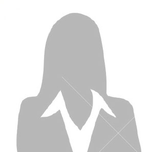

Abrham Sisay
2015 AAU CS graduate.

Dagmawit Dejene
2015 AAU CS graduate.
Lidiya Yohannes
2015 AAU CS graduate.
Gedion Tadesse
2015 AAU CS graduate.
Addis Ababa University At a Glance
Addis Ababa University (AAU), which was established in 1950 as the University College of Addis Ababa (UCAA), is the oldest and the largest higher learning and research institution in Ethiopia. Since its inception, the University has been the leading center in teaching-learning, research and community services. Beginning with enrollment capacity of 33 students in 1950, AAU now has 47,610 students (29,872 undergraduate, 15,398 Master’s and 2,340 PhD students) and 8,709 staff (3,110 academics, 4,346 admin support staff and 1253 health Professionals). In its 14 campuses, the University runs 70 undergraduate and 293 graduate programs (72 PhD and 221 Masters), and various specializations in Health Sciences. Over 222,000 students have graduated from AAU since its establishment. The University is led by a President who is assisted by four Vice Presidents and one Executive Director: Academic Vice President, Vice President for Research and Technology Transfer, Vice President for Administration and Student Services, Vice President for Institutional Development and the Executive Director of the College of Health Sciences (with the rank of Vice President). In recent years, the University has been undertaking various reform schemes in order to cope with and respond to the fast-changing national and international educational dynamics. At present the University has 10 colleges, 4 institutes that run both teaching and research, and 6 research institutes that predominantly conduct research. Within these academic units, there are 55 departments, 12 centers, 12 schools, and 2 teaching hospitals. The University has the following academic units:
Colleges
College of Social Sciences
College of Humanities, Language Studies, Journalism and communication
College of Development Studies
College of Business and Economics
College of Law and Governance Studies
College of Education and Behavioral Studies
College of Natural and Computational Sciences
Skunder Boghossian College of Performing and Visual Arts
College of Veterinary Medicine and Agriculture
College of Health Sciences
Research and Teaching Institutes
1. Academy of Ethiopian Languages and Cultures
2. Addis Ababa Institute of Technology
3. Aklilu Lemma Institute of Pathobiology
4. Ethiopian Institute of Architecture, Building Construction and City
Development
5. Ethiopian Institute of Water Resources
6. Institute of Biotechnology
7. Institute of Educational Research
8. Institute of Ethiopian Studies
9. Institute of Geophysics, Space Science and Astronomy
10. Institute of Peace and Security Studies
11. Academy of Ethiopian Languages and Cultures
12. Horn of Africa Regional Center and Environment Network
Schools
1. Alle School of Fine Arts and Design
2. School of Allied Health Sciences
3. School of Commerce
4. School of Earth and Planetary Sciences
5. School of Information Science
6. School of Journalism and Communications
7. School of Medicine
8. School of Pharmacy
9. School of Public Health
10. School of Social Work
11. Yared School of Music
12. Yoftahe Nigussie School of Theatrical Arts
Meet Our Developers
Abrham Sisay
2015 AAU CS graduate.
Dagmawit Dejene
2015 AAU CS graduate.
Lidiya Yohannes
2015 AAU CS graduate.
Gedion Tadesse
2015 AAU CS graduate.